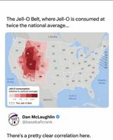
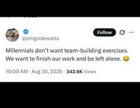

0



0


404 Media reports:
"We will not add facial recognition to our devices," Flock CEO Garrett Langley said in a recent video. But other, third-party companies are telling cops that they are willing to add facial recognition to data gathered by Flock cameras in order to "close that gap." A company called VIDIZMO is advertising the capability to export footage from FlockOS to its own platforms that do facial recognition, behavior prediction, and racial and gender analysis on live camera feeds. VIDIZMO is a several decades-old video analysis and database company that has started offering facial recognition technology to cops within the last six months. In a May email to Johnson City, Tennessee, deputy police chief Michael Adams, a salesperson from VIDIZMO wrote that the company's product could do facial recognition on both Flock and Axon [body-worn camera] data in "one searchable platform...."
VIDIZMO's CEO, Nadeem Khan, told 404 Media on a video call that the company has not yet started running facial recognition tech on footage from Flock cameras, and that it has not actually built the specific tool that would export data from Flock's system to its own platform (though the company advertises this capability online, and the company already sells other facial recognition products). But Khan said VIDIZMO "would love to do the integration," and that he believes facial recognition "is the way the world is going, the way the world will have to be," and that he thinks Flock should offer the capability itself in a way that "balances privacy, security, and the freedom that we enjoy in this country."
The article notes that VIDIZMO says on its website, "You can identify individuals from seven races: White, Black, Indian, East Asian, Southeast Asian, Middle Eastern, and Latino Hispanic." VIDIZMO adds that stores or cities can also then do "demographic analysis" for marketing purposes by determining the races or ages of people showing up....
Read more of this story at Slashdot.
U.S. President Donald Trump "doxxed" a U.S. senator today, writes the Washington Sun, by posting his cell phone number "as part of a plea for his Truth Social followers to badger his Republican ally into making daylight saving time permanent."
When The Washington Sun called the number minutes after Trump's post, a recording said the mailbox was full and could not receive messages...
[Senator Tom] Cotton has long detested the idea of making daylight saving time permanent. In a Senate floor speech last year, Cotton said doing so would "make winter a dark and dismal time for millions of Americans," particularly harming kids. The Senate was only able to unanimously pass the bill in 2022 because Cotton was reportedly unaware the vote was taking place, though the measure stalled out from there. The Arkansas Republican didn't back down in a post on Saturday. "Arkansans don't want their kids going to school in the pitch dark, and I'll always put Arkansas first," he posted on X.
Trump continued his tear against Cotton soon after. "If Tom Cotton were putting Arkansas first, he would give them an extra hour of daylight and, more importantly, they wouldn't have to run all over their houses, farms, work places, and everywhere else, twice a year, having to change their Clocks, and often forgetting to do so," he posted on Truth.
Read more of this story at Slashdot.
The Guardian reports that California governor Gavin Newsom signed laws on Wednesday "aimed at protecting California workers from the threats of artificial intelligence , including potential job losses and workplace surveillance."
The laws ban employers from using the technology to predict a worker's emotional state by using their biometric data, require employers to send written notices to workers if AI is responsible for mass layoffs and ban employers from relying on AI to decide to fire someone... The governor signed a law this month requiring operators of AI chatbots to perform risk assessments before rolling them out and an executive order requiring the state to consult with experts to further improve oversight over the industry.
The law includes "expanded tracking of AI's economic effects" leading to recommendations on how to best "adapt job-training and public-benefit programs," according to the governor's office. "California has also launched an AI Unemployment Tracker and solicited statewide public input on AI's economic impacts through Engaged California."
But two weeks ago Politico reported that the governor also signed executive orders to "explore proposals like requiring that AI companies develop a 'kill switch' for their most advanced models."
Anthropic CEO Dario Amodei, who called for a slowdown in AI development amid existential risk concerns, said... that while a kill switch "could be a good idea," it was no "panacea...." [California lawmakers] were generally supportive of Newsom's plan and showed signs of coalescing around the kill switch idea, which was stripped out of legislation proposed two years ago. Rep. Ted Lieu, who introduced bipartisan kill switch legislation in the House, boosted Newsom's call for Congress to mirror California's approach.
But not everyone supports this approach, including the Free Software Foundation's campaigns manager, Greg Farough:
FSF: Having control over the technology we use is a fundamental part of software freedom. Without it, you simply don't have the basic freedoms you deserve when doing any type of computing, large or small. Don't let "artificial intelligence" be an exception: all users everywhere deserve complete control over their own computing. While it's understandable to be pleased by this news from California, Newsom's executive order also invites questions about the "kill switch" itself that could matter a great deal for freedom. Assuming such a kill switch was developed, who would really control it?
We hope our readers understand the problems inherent in giving one single or a small number of kill switches to anyone. Newsom wisely wants an independent organization to verify their functionality, but even this still sets too dangerous of a precedent. We cannot allow such centralization of power over our computing to become commonplace, especially by the corporations that provide these models in the first place. We also cannot trust even the most well-intentioned "independent organization" to take care of its verification.
Giving users the freedom that they deserve over large languages models would be an enormous departure from how most are developed and used today. But, if any group is capable of coming up with such a plan, it's the experts mentioned in Newsom's order. Like he states at the beginning of his executive order, the vast majority of them are already right there in California. We urge the Government Operations Agency to consider the precedent they are setting, and ask them to write their recommendation to the governor in ways that puts the freedom and dignity of the individual user first and foremost.
The Guardian adds that Newsom also signed an executive order this week "to require state agencies to continue to refer to the technology as 'artificial intelligence' instead of the term 'super intelligence' as Donald Trump recently ordered US diplomats to use."
Read more of this story at Slashdot.
An anonymous reader quotes a report from Ars Technica: Rendering Doom in a database is obviously a bad idea," Lukas Vogel writes in a lengthy blog post explaining how exactly he managed to render Doom using an SQL database. OK, that's not entirely accurate. The SQLDoom project uses a small Python client to handle input and output, drive the game's timing, and display each frame to the screen. Behind that, a series of CedarDB tables tracks the game geometry and state, while about 1,300 lines of SQL queries spread across 89 common table expressions implement the game logic and generate 35 bitmap framebuffers per second.
In this, SQLDoom is a major improvement over Vogel's previous DoomQL project, which last year set out to build "a multiplayer Doom-like shooter entirely in SQL." Unfortunately, that effort ended up with raycasting-based, grayscale ASCII graphics that were more akin to the simplistic 90-degree-angled maps of Wolfenstein 3D. The newer SQLDoom, on the other hand, generates full-color 640x480 frames that look like they could have come from the original Doom executable. [...] If you want to run a Doomtabase on your own local machine, you can do so simply with the GitHub code, a copy of CedarDB, and a Doom WAD file. Or you can jump into a free online hosted demo match to test it out without all the setup [...].
Read more of this story at Slashdot.
Flock's cameras offer "indiscriminate mass surveillance," a U.S. federal judge wrote in a ruling Thursday, as does any system with "continuously updated" location histories for all the vehicles filmed by automated license plate-reading cameras.
The judge's ruling included italics for emphasis when describing "the question of why is it the government's business where everyone goes all the time?"
Judge Hill: We might reasonably expect our friends and family to tell us something like: "Hey, I saw you out driving by the store last week." But we do not expect people we know — let alone strangers, and especially not law enforcement — to randomly approach us to say: "Hey, I have been following your car for the last 30 days, and here is a detailed log of every place your vehicle has been with supporting photographic evidence. I am also going to share this information with law enforcement throughout the country so they know your whereabouts, too...."
Cell phones also move in public places where people can see you in plain view. But it becomes constitutionally problematic when law enforcement can indiscriminately and passively catalog your whereabouts over an extended period of time and then use that information for any purpose whenever convenient... [I]t is also consequential that we are
not just dealing with stationary cameras. The cameras on [police officer] Alaniz's vehicle itself feed information into these systems... It is also no longer difficult to imagine law enforcement using a fleet of drones hovering over an entire city so they don't miss the movement
of a single vehicle.
Officer Alaniz had used Flock's travel history for a car when deciding to pull over its driver, which eventually led to a vehicle search and charges of possessing drugs with intent to distribute. But the judge wrote that because this violated reasonable expectation of privacy, "all evidence obtained after Alaniz initiated the ALPR search must be suppressed as fruit of the poisonous tree." The judge granted a motion to "suppress all evidence obtained as a result of these unconstitutional searches
and seizures."
The Washington Post got this comment from a Flock spokesperson about the judge's ruling: "we expect it will be appealed and ultimately overturned." (Flock's spokesperson added that the ruling "does not set controlling precedent and does not affect law enforcement agencies' continued use of these important public safety technologies.")
But meanwhile, on Friday U.S. Senator Bernie Sanders introduced the Ban Flock Act. The proposed bill bans federal agencies in America from using automated license plate reader systems "without explicit statutory authorization". The bill also lets certain federal agencies (including the Homeland Security Department) withhold grant money from State and local governments that use automatic license plate readers.
TechCrunch reports:
Despite its title, the bill doesn't call out Flock in the text and covers any and all ALPR systems. The bill allows exceptions only for toll collection and for uses that Congress approves in future legislation, which would have to limit data retention to no longer than 48 hours.... Representative Alexandria Ocasio-Cortez (D-N.Y.) and Senator Jeff Merkley (D-Ore.) are co-sponsors.
Read more of this story at Slashdot.
An estimated 2.3 million cancer cases worldwide in 2024, about one in eight, were attributable to infections, according to a study published in The Lancet Oncology. "This recent Lancet data is a profound reminder that a significant portion of our global cancer burden is fundamentally preventable," said David Greenberg, MD, of Hackensack Meridian Jersey Shore University Medical Center, in a news release. "We have historically siloed infectious diseases and oncology, but they are deeply intertwined. By shifting our focus toward aggressive infection control, we can literally vaccinate and treat our way out of millions of future cancer diagnoses." From a report: The study found that an estimated 2.3 million new cancer cases were attributable to infections globally in 2024, equivalent to 12% of all cancer cases. Of these, the largest number (760,000 cases, or 4%) were caused by H. pylori, followed by HPV (750,000 cases, or 4%), HBV (360,000 cases, or 2%), EBV (260,000 cases, or 1%) and HCV (160,000 cases). More than three quarters of infection-attributable cancers occurred in low- and middle-income countries. Eastern Asian had the largest burden, with 990,000 cases (42% of the global total). Rates were also higher than the global average in sub-Saharan Africa, Central and Eastern Europe and Southeast Asia.
Read more of this story at Slashdot.
Paramount and Warner Bros. Discovery will operate under the Skydance name once their roughly $110 billion merger closes, which is expected on October 6. The combined company will bring together Paramount+, HBO Max, CBS, CNN, MTV and other networks, along with major franchises including The Lord of the Rings, Game of Thrones, DC and Yellowstone.
Ellison said the Paramount and Warner Bros. brands will remain prominent. "We never wanted a new corporate identity to diminish, alter or overshadow either one. Instead, we wanted a name that would give the combined company an identity of its own while allowing Paramount and Warner Bros. -- and all our extraordinary brands -- to remain in the spotlight."
Read more of this story at Slashdot.
Spaceflight Now reports:
"A SpaceX Falcon Heavy rocket launched from Florida Thursday night on a classified mission for the National Reconnaissance Office, America's spy satellite agency... The NRO has previously flown payloads on 22 Falcon 9 rockets but this is the first time it has used the heavy-lift Falcon Heavy, which consists of three Falcon 9 boosters and an upper stage, topped by a payload fairing.
The powerful rocket, which lifts off under the power of 27 Merlin 1D engines, was introduced to great fanfare in 2018 and made its 14th flight Thursday night... NROL-97 was SpaceX's third Falcon launch of the day. In addition to the Crew 13 mission, the company launched 130 payloads on the Transporter 13 rideshare mission from its West Coast pad at Vandenberg Space Force Base in California. It was the first time the company has landed four boosters in a single day.
CNN reports:
As Starship flights ramp up, SpaceX has made clear that the company will phase out the use of two of its most iconic creations: the Dragon spacecraft, which ferries astronauts and cargo to and from the International Space Station, and the Falcon 9 rocket, which for a decade has dominated the global launch market.
These vehicles not only revolutionized the space industry in their own way, they're also still very much essential to ongoing work in Earth orbit, without clear backup options in place. The prospect of this loss is already spurring panic among some satellite operators, said Caleb Henry, director of research at analytics firm Quilty Space... Henry said he expects that most of the remaining space on board Falcon 9 rockets has already been sold and — beyond early 2029 — such flights may be reserved solely for the US government. Even NASA, which currently counts the Dragon capsule as the only US-made spacecraft capable of getting its astronauts to and from the ISS, has also acknowledged the looming retirement of SpaceX's workhorse vehicles....
Despite the success of Falcon and Dragon, a peek at SpaceX's business book may hint at financial reasons for retiring the vehicles. In its first quarterly earnings report, SpaceX revealed its space segment — which includes Falcon, Dragon and Starship — lost $542 million. By comparison, its Starlink internet and connectivity business made nearly $1.7 billion. Starship is expected to continue to cost SpaceX untold millions as it moves out of the prototyping phase. But one reason SpaceX is willing to bet big on Starship is that it's simply "much better" for achieving the company's own long-term goals, said SpaceX president Gwynne Shotwell at a recent conference. So it makes sense to shift resources toward the megarocket's future....
This rocket supply crunch has been looming since 2022, when Russia invaded Ukraine — which immediately removed Russia's Soyuz and Proton rockets from the commercial market, Henry noted. On top of that, Amazon — which is deploying a space-based internet constellation to rival SpaceX's Starlink — stepped in to buy more than 100 launches from various rocket makers.... Though some satellite manufacturers are hopeful that space onboard future Starship launches will be offered to satellite operators, it's not clear when or if that will happen.... It is possible that a launch supply crunch could be averted, noted Micah Walter-Range, a space analyst and contributor to the VettaFi Space Index. But satellite operators may be wary because newer rockets that have for years promised to step up to compete with the Falcon 9 have not yet begun flying with any regularity.
"The space industry hates uncertainty, particularly when it comes to planning of launches," Walter-Range said.
The article notes that Rocket Lab, Firefly Aerospace, United Launch Alliance, and the Jeff Bezos-founded Blue Origin "have not yet reached the scale or launch cadence that the industry is demanding."
Read more of this story at Slashdot.
Phoronix reports:
Steam on Linux use in March hit an all-time high of around 5.33% marketshare. Since then it pulled back to around 4% while for September 2026 the Steam Survey results... indicate a rather steep decline of 0.85%, down to 3.05%. Meanwhile macOS is at 1.92% and Microsoft Windows at 95%... Steam's Survey reports a 7.42% increase in Chinese use, up to 31.39% overall of the Steam population. Usually those large month-over-month swings where Steam China use shoots up dramatically is a boost to Windows and a detriment to Linux. Some attribute the large increases in Simplified Chinese use to being a reporting/sampling issue.
When diving into the Steam Linux data exclusively, CachyOS has spiked by another 2.65% to now account for 18.12% of the sampled Linux gaming population. That even outperforms SteamOS Holo coming in at 17.37%. Among Linux gamers on Steam, AMD CPUs still account for the high 60 percentage space thanks to the Steam Deck and Steam Machine using AMD APUs and their open-source/Linux support being popular with enthusiasts.
Read more of this story at Slashdot.
"The winner of the Nikon Small World in Motion competition is under investigation," writes the photography news site PetaPixel , "after scientists accused Dr Ning Xu of using AI in his video."
The Nikon competition is about showcasing the beauty, complexity, and artistry of the microscopic world. The entries are abstract, often baffling to laypeople. But when Dr Xu was announced as the winner last month, members of the scientific community began to cry foul. "There are many serious problems with this video," Edward Phelps, associate professor at Florida University, says on LinkedIn. Phelps points out that "purple structures pop in and out of existence" and "green cilia also appear from nowhere and do not match the known size."
Dr Xu's video is supposed to show the movement of cilia, which are hair-like structures that line part of the lungs... However, since Dr Xu won the prize, Nikon Small World updated its LinkedIn post celebrating his triumph with a note that reads: "Regarding questions raised about this year's Small World In Motion winning video, Nikon is carefully re-reviewing the information provided during the initial vetting, along with additional supporting materials from the entrant." Nikon adds that Dr Xu is "respectfully complying and has provided detailed technical documentation outlining the microscopy equipment, imaging methods, and processing techniques used to create the source video."
Worse still, Ian Donovan, an MD/PhD Student at UT Southwestern Medical Center, says he ran the video through Google Gemini, and the result came back with an invisible Google SynthID watermark that indicates at least some of the video is AI-generated. Dr Xu, an optical engineering researcher at the National University of Singapore, reportedly responded to the LinkedIn post. According to Nature, Dr Xu accepted that he had used an AI model to assist with post-processing but denied breaking the rules of the competition, which clearly state that "AI-generated videos are not permitted."
"It was applied afterwards to the reconstructed grayscale data to distinguish and color structures with similar morphology," he wrote. However, Dr Xu's messages on the LinkedIn post can't be found as of today (October 1), and his LinkedIn profile now appears to have been deleted entirely.
Meanwhile, some college students "see a double standard when colleges penalize them for outsourcing academic work to AI but allow similar use by institutional leaders," writes Entrepreneur magazine:
According to a recent report from The New York Times, Dartmouth College students are calling out a top professor for allegedly using AI to help with writing... The school's provost, Santiago Schnell, faced allegations of AI use last week from the college's student-run newspaper, which detected AI in some of his published writing. The college said it was launching an investigation into the written work. Schnell said in a statement to the student-run newspaper, The Dartmouth, that he used AI "for language refinement, copyediting, improving clarity and organization and making writing processes more efficient." The newspaper ran his statement through an AI detector, which said that Schnell had used AI to write it, too.
Read more of this story at Slashdot.
Longtime Slashdot reader Geoffrey.landis shares a report from NPR: Google just put a refrigerator-sized satellite into space, part of a research project the company hopes can pave the way for orbiting AI data centers powered by the sun. The prototype satellite has four specialty chips in it called Tensor Processing Units, or TPUs, that Google designed for machine learning and has already deployed in data centers on Earth. The chips will run a version of the company's Gemma AI model for 15 minutes at a time due to heat management constraints, using the open weight model to answer simple queries.
In a blog post, Google said the mission will gauge how the TPUs handle "the physical stress of spaceflight and the radiation and thermal extremes of space." The satellite launched October 1 is a prototype that Travis Beals, senior director and lead of Project Suncatcher, called "a very minimal test" to make sure the chips can run in space. A SpaceX rocket carried it into orbit, and Planet will get it up and running. Beal said Google will then fire up and test the TPUs. The goal is for the mission to be operational for a year.
Read more of this story at Slashdot.
Researchers from Carnegie Mellon, MIT, NYU, and Stanford have built an AI called Ataraxos that finally cracked Stratego, beating four-time world champion Pim Niemeijer 15 games to one with four draws. Its key advantage was a second neural network that estimates the identities of hidden enemy pieces, letting the system search plausible game states rather than brute-force a massive hidden-information space. Ars Technica reports: Just like [DeepMind's DeepNash, introduced in 2022], Ataraxos learned by playing against itself -- 163 million games in total. In these self-play sessions, moves that led to wins were reinforced and played more often in future matches, while moves that led to losses were played less, which was the same simple training idea. The difference was in how much Ataraxos adjusted after each game, because hidden information tends to send self-play learning algorithms around in circles. The team addressed this by making big, bold changes in strategy early in training and small, careful ones later.
The even bigger innovation was something DeepNash never had: thinking ahead before each move. AIs like AlphaGo refine their general strategy with a search just before acting. DeepMind couldn't make that work in Stratego because the search space was too large, leaving it an open question whether it was worth trying. "This is one of the things that we did figure out how to do," Farina said. The solution was a second neural network, a belief model, trained to guess the opponent's hidden pieces based on how they had been moving. This way, instead of iterating through every possible arrangement, Ataraxos samples plausible ones, plays out candidate moves in each, and picks based on how they turned out. And it shows in its playstyle.
[...] DeepNash was trained for two to three months on 1,024 of Google's specialized chips, a run the Ataraxos team estimates would cost $3 million to $4.5 million at 2025 prices. Ataraxos, in contrast, needed 16 GPUs for a week, plus an additional four GPUs for four days to train the belief model. Farina and lead author Samuel Sokota achieved this efficiency by writing a simulator that runs millions of moves per second on graphics cards. "At the scale that we are in academia, we don't really have access to an entire field of GPUs," Farina said. The algorithm also learned far faster -- it played about 34 times fewer games than DeepNash, and still ended up much stronger. The findings have been published in the journal Nature.
Read more of this story at Slashdot.
Longtime Slashdot submitter theodp writes: GeekWire reports that the University of Washington has moved its Global Innovation Exchange {GIX) program to Microsoft's campus in a rent-free deal (UW News release). GIX, an institute supporting tech leaders that offers an MS in Technology Innovation, is the first UW program to set up full-time operations at Microsoft, whose headquarters are just across Lake Washington from the university's main campus. Microsoft provided a $42 million in-kind donation to establish the embedded facility; the UW is leasing the new 48,500-square-foot GIX space in Microsoft's Building 92 rent-free. GIX debuted in 2015 as a partnership of the UW and China's Tsinghua University and received $70 million in Microsoft support at the now-abandoned GIX location in Bellevue (the Steve Ballmer Building), although indications are that a long-term arrangement did not come together as intended. In a Thursday LinkedIn post, Microsoft President Brad Smith wrote: "Last night we opened a door unlike any other. At the heart of Microsoft's campus, step into the new home of the UW's Global Innovation Exchange (GIX) and you cross from Microsoft into the University of Washington. No one has ever put a great research university and a leading technology company under the same roof quite like this. As far as I know, no one has even tried. The timing matters. Artificial intelligence is advancing fast. The question is whether the people building it understand the world it's changing. This calls for a new style of education and leadership. We need leaders who understand the technology deeply and see things through other people's eyes. Leaders who learn by collaborating on real projects with people from different countries and disciplines. That's what GIX is built for. Students will learn from faculty across the UW, take classes taught by Microsoft employees, and be mentored by people from across our industry here in the Pacific Northwest." Interestingly, Smith's contention that UW GIX students will benefit from a 'new style' of Microsoft and industry-influenced education sounds a lot like Smith's contention that K-12 school children are better off thanks to a new style of Microsoft and industry-influenced education. In an interview last month, Coding Kids: Big Tech's Battle to Remake Public Schools author Natasha Singer told NPR (podcast, transcript), "For my book, I spoke to Brad Smith, who's the president of Microsoft, and he has been one of the leaders in the tech industry pushing for [K-12] computer science [and now AI literacy] in schools. [...] And Brad Smith said, philanthropy in the private sector is doing this work because public schools have failed to do what they were supposed to do. And his view is that public schools should be teaching modern subjects like computer science, and they were not equipped to do it fast enough and the tech industry stepped in to help. And is it better than if schools were able to do this themselves? He said, no, but it's certainly better than nothing. And he said to me, you know, think about where we would be on computer science if the tech industry hadn't stepped up. [...] Well, I've been having this conversation with him for 10 years, and when we started having it 10 years ago, I said to him, I get that, but when big tech companies put their finger on the scale, it tips education in certain ways that not only favor the tech industry but can obscure equally or more important things." So, is "The University of Washington at Microsoft" a good or bad idea?
Read more of this story at Slashdot.
Apple says it will tighten macOS Full Disk Access controls as increasingly capable AI agents raise the risks of apps gaining broad access to users' files, messages, mail, and browsing history. TechCrunch reports: Days after a journalist claimed that Meta's Muse app on Mac read their private messages -- a claim that Meta disputed -- Apple announced that it's introducing additional controls around a setting called "Full Disk Access" on macOS. The feature was designed to allow backups to function properly, but AI agents have now increased "the risks associated with this level of access," Apple said. [...] In Muse's case, the AI optionally allows users to enable Full Disk Access. This setting, Apple explains, gives an app permission to access files, mail, messages, and even browsing history.
"Some developers are using Full Disk Access in ways that could put users at risk, exposing everything on their systems... without users' full knowledge and understanding," Apple said in a new blog post aimed at developers. The company says that, going forward, it will introduce new controls aimed at ensuring that users who "genuinely wish to grant an app this extraordinary level of access" can do so only with "every explicit user action."
"Addressing this is critical. As AI agents become increasingly capable and autonomous, the risks associated with this level of access will grow substantially. We are committed to ensuring users clearly understand these risks before granting such access, so they can make informed decisions about their own data and privacy," Apple wrote.
Read more of this story at Slashdot.
An anonymous reader quotes a report from Reuters: The state of New Mexico asked a judge on Thursday to order Meta Platforms to pay between $35 billion and $40 billion in penalties after a jury found the company had misled consumers about the privacy of their data on Facebook in a case that came out of the Cambridge Analytica scandal.
Attorneys for New Mexico made the request at a hearing in a lawsuit brought following revelations that the British political consulting firm, which worked on Donald Trump's 2016 presidential campaign, harvested personal data from as many as 87 million Facebook users through a third-party app without their consent. The jury returned its verdict on September 25. Judge Francis Mathew, who oversaw the trial in Santa Fe, will decide how much Meta must pay in financial penalties. [...] State law allows the judge to decide how much to fine Meta per violation, up to $5,000. At the hearing on Thursday, Randi McGinn, a lawyer for New Mexico, said applying the full $5,000 penalty to the number of violations would create too large of a penalty under the US Constitution's protections on due process. But the judge should order a significant payment that will impact the company, McGinn said.
"This court should speak to Meta in the only language it understands, which is money, and the value of its stock price," McGinn said. She said $35 billion to $40 billion, which represents about 20% of the possible penalties that could be awarded under state law from the verdict, would impact the stock price while complying with Meta's right to due process under the Constitution. At the hearing on Thursday, Matt Nicholson, a lawyer for Meta, called the state's request an "astronomical penalty that would obviously violate a host of constitutional provisions." In court filings, Meta urged Mathew to cap the penalties at $3.45 billion. The jury may have said it found Meta's statements misleading, but the evidence shows that Meta does not sell user data and New Mexico did not prove that any consumer had actually been misled, the company said in court filings. The judge said he expected to issue a ruling later this month.
Read more of this story at Slashdot.
Alex Leary / Wall Street Journal : Sources: AI czar Jay Clayton to chair the WH's AI task force, called “Super Intelligence Force”, to pen a report on AI's risks and opportunities within 120 days — The White House group will be led by Director of National Intelligence Jay Clayton who will serve as AI czar
David Robinson / The Atlantic : David Robinson, ex-OpenAI safety and policy: SV lacks a safety-centric culture; labs must study other fields' safety approaches; time for trial and error's over — What I'm about to tell you has, I realize, become something of a cliché: I resigned this week from OpenAI.
Reuters : Sources: ShinyHunters member Saif al-Din Khader, aka “Rey,” was detained in Jordan and is cooperating to identify other hackers involved in the FBI breach — A key member of the ShinyHunters hacking group, which claims to have stolen data on every FBI employee …
Andrew Romero / 9to5Google : YouTube says it is adjusting its Shorts recommendations to prioritize “original content” and reduce the reach of channels re-uploading others' content — YouTube says it wants to ‘focus on originality’ in a push to surface better Shorts recommendations for users.
Sarah Perez / TechCrunch : OpenAI's DevDay 2026 announcements to turn ChatGPT into a place to discover, launch, and use software could potentially disrupt the traditional app store model — The focus of OpenAI's Dev Day on Tuesday may have been on its agentic assistants known as Dots, or its new AI models, but combined …
Nilesh Christopher / Los Angeles Times : A look at a radio show co-hosted by an AI DJ and a human that is expanding in LA and other cities, as radio workers worry synthetic hosts may soon replace them — - 8 min Click here to listen to this article — Coyotec, an AI co-host on Los Angeles' José FM …
Howard Liu / South China Morning Post : Center for Technology & Statecraft: Chinese fabs had acquired ~343 DUVi tools by early 2026, with ~270 from ASML; DUVi can be adapted to make 7nm chips and HBM — DUV tools, though not as advanced as EUV, can be adapted to manufacture 7-nm logic chips and advanced memory for AI processors, report says.
Robert McMillan / Wall Street Journal : A look at the Swarmchasers forum, which has 400 members, including the Nightingale Collective and Transluce, who comb the web for traces of rogue AI agents — Swarm chasers hunt for clues of bad behavior. Their work is our starkest understanding yet of what happens when AI goes wrong.
Mike Wheatley / SiliconANGLE : Relay, which develops cloud-hosted, AI-powered smart radio communicators for frontline workers, raised $36M to help businesses capture “frontline intelligence” — The business communications startup Relay Inc. says it's trying to capture “frontline intelligence” …
Meir Orbach / CTech : Nasdaq-listed neocloud Nebius acquires Inferize, whose tech helps optimize GPU utilization and reduce AI request costs, sources say for $100M to $150M — The Israeli startup, which was founded by former Granulate executives and employs 17 people, built technology designed to reduce idle GPU capacity when AI demand changes.
Tim Culpan / Culpium : Elon Musk confirms TSMC discussions on a Terafab deal to supply Tesla, SpaceX, and xAI, as TSMC also mulls a Texas presence; Musk didn't elaborate — [Exclusive] Taiwanese foundry giant may use Terafab as anchor client for a future Texas semiconductor factory
Ram Iyer / TechCrunch : Reco, whose tech helps enterprises secure and govern AI agents across SaaS environments, raised a $55M Series B extension, taking its total funding to $140M — Terms like “AI sprawl” have become common fare on tech social media and in thought leadership as enterprises start deploying AI agents en masse.
Elias Schisgall / Wall Street Journal : Onsemi revises its Synaptics acquisition to a ~$5.7B all-cash offer, down from the ~$7B all-stock deal announced in June, after Synaptics received another bid — ON Semiconductor says it will pay $123 a share for Synaptics, giving the deal a value of around $5.7 billion
Jason Koebler / 404 Media : A US judge rules an officer's use of Flock to search a car's license plate was a form of “indiscriminate mass surveillance”, and violated the Fourth Amendment — Flock's nationwide network is quickly “approaching dragnet-type law enforcement practice” and the cop should have got a warrant, the judge wrote.
Maria Deutscher / SiliconANGLE : Supabase raised $150M led by Singapore's GIC and agrees to acquire Turso, which offers a database optimized for AI agents, for an undisclosed sum — Supabase Inc., a startup that commercializes the open-source PostgreSQL database, has raised $150 million in funding. — Singapore's GIC sovereign wealth fund led the deal.